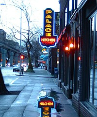
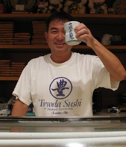
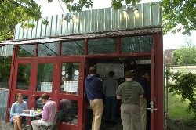
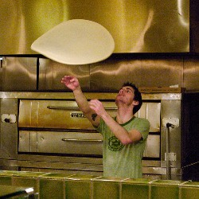
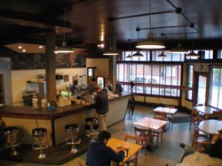

Best Places to Eat
I was tagged by Swanky for this meme… here goes!
I’m supposed to come up with five great places to eat in my area, which is Silicon Valley. There’s one problem, though… I’m having trouble finding good food in my area. It’s a common complaint of mine — how can a region that hosts a world-class university (Stanford) and the headquarters of some of the brightest, youngest, hippest companies around (Google, Yahoo!, Apple, and about a hundred more) feel like such a cultural wasteland? Don’t get me wrong — I’ve no doubt that there’s great food hiding somewhere around here, but I’m having to slog through a lot of mediocre meals in my quest to find it.
I’m not a picky eater, or even a finicky eater — when it’s chow time, I’m game for most anything — but I am a big ol’ food snob. I’ve only been here for a bit more than a year, and so far I just haven’t found five places in Silicon Valley I feel confident actually recommending. I can come up with one. Vive Sol in Mountain View is fantastic. I would love to find more places like Vive Sol — please, if you know of great places to eat in Silicon Valley (esp. towards the Palo Alto end), I’m all ears.
So, I’m going to recommend five places in Seattle, instead:
- Palace Kitchen

Palace KitchenI lived in Seattle for nearly 30 years. I go back four generations in the Seattle area — on all sides of my family. I got some deep, deep roots there. The last time I went back to Seattle, this time to show Hanford my hometown, the very first thing I did was head straight to Palace Kitchen. I mean, straight there. We picked our hotel because it was the closest to Palace Kitchen.
An example of how great the service is: on one visit, the place was packed, and we had other places to be that night, so we had to make it a quick stop for appetizers at the bar. It was crowded enough at the bar that we were about three people deep, but the bartender actually left the bar, and walked all the way around to take our order. Holy moley! That’s some serious service. She ably handled our order of some appetizers, too, and assured us that they’d find a way to fit our appetizer plates on the small ledge at the edge of the bar that would serve as our table. Sure enough, it all worked out just fine — and the drinks the bartender made were divine, prepared with a confident and experienced hand, and served quickly.
Palace Kichen is owned by Tom Douglas, and it’s my favorite of his restaurants — it’s casual, but I think the food is more interesting than what you find at his other restaurants. The menu there is variable, based on what’s currently freshly available, and what flavors the chef feels like playing with. Tom Douglas beat Morimoto on Iron Chef. He’s just insanely good. I own his cookbooks, and his recipes make me look good. I love him. He’s my food hero.
- Toyoda Sushi

Toyoda-san, photo by Markus KolbSimple, unassuming, and just-plain-excellent sushi. Toyoda Sushi is a small place, tucked in the middle of a row of nothing little shops on Lake City Way, between a hobby shop and a dance studio. Lake City Way is not where you go to get good food in Seattle, it’s where you go to buy cars. I went past this place a hundred times without even noticing it — and even if I had, I would have written off sushi in Lake City as a bad idea.
But Toyoda Sushi is wonderful. If it’s not the best sushi in town, it’s very, very close — and the unfakeable neighborhood feel of it makes it my hands-down favorite. The tiny entry is always crowded with people who know the drill: write your name on the list, and wait patiently. The waiting area is plastered with about a hundred photos of Toyoda regulars — there’s a few photos of Paul Newman tucked in there, apparently he’s a fan, too. The walls of the restaurant are decorated with a mix of Japanese prints and crayon drawings by the younger regulars. They serve pie. Happy regulars on their way out the door call out “Thank you, Toyoda-san!” to Mr. Toyoda, who grins back broadly while happily slicing away behind the sushi bar. If you are able to get a seat at the sushi bar, Toyoda-san will keep slipping you delicious little cuts of extra fish, without a word. It’s the most loved and loveable sushi place I’ve ever seen, and it deserves it.
- Paseo

Paseo, photo by Mark GriffithPaseo ruined me. I found it only a few months before I left Seattle, and I cursed myself for not finding it sooner. It’s not really a restaurant, it’s a cash-only sandwich stand with a few tables. My love for their Midnight Cuban has sent me on a fruitless quest to find such a delicious sandwich again — but nothing comes close. The typical cuban sandwich out there might as well be a McDonald’s hamburger compared to the deliciousness that is Paseo’s Midnight Cuban.
- Pagliacci Pizza

Pagliacci, photo by lindesMy first job when I moved out of the house at 16 was at Pagiacci Pizza in the University District. Being poor as dirt, pizza was my only lunch or dinner for months. But even when my pizza-slinging stint was over, I still kept going back. Over the years, I generally ordered a Pagliacci pie for dinner at least once a week. When I was working back in the U-District again (this time in computational biology — a much cushier gig), I found myself again eating pizza every single day for lunch, this time by choice — and still kept up with my regular pizza dinners. Like Coca-Cola, I will never grow tired of Pagliacci Pizza. I may be addicted.
They have special seasonal pizzas that I always looked forward to each year: the Roasted Tomato was perhaps my favorite, but I also loved it when the Gorgonzola Pear pizza rolled around (I always added prosciutto). Year-round, my favorite pizza was the Agog Primo — whole roasted garlic cloves, kalamata olives, goat cheese, mushrooms, fresh tomatoes, parsley, on an olive-oil base (instead of their tomato sauce — which was allso excellent). They also do all the traditional pizzas, and they do them really well.
- Lighthouse Roasters

Lighthouse RoastersOkay, you don’t actually eat coffee, but it’s an absolute essential to many a Seattleite, and I was no exception. It’s Seattle’s ultimate comfort food. It was one of the things I had to wean myself off of when I left — there was no good coffee near me when I lived in Los Angeles. When I lived in Seattle, my ritual nearly every weekend morning was to go get coffee at whatever was the best, closest coffee shop/stand. My favorite, and the one that was walking distance from my final residence in Seattle, was Lighthouse Roasters in Fremont. I loved starting my weekend mornings with a groggy stroll through the neighborhood, past the smiling topiaries, to be greeted by the quietly-friendly baristas, and given a cup of the best damned eye-opener. The stroll back was always a little brighter, and my day was off to a running start.
Okay, that’s my five! A few more orders of business for this meme to be completed:
The list:
It’s a little chain-lettery, sure, but it lets you see some other cities that have been profiled. If I’ve tagged you, just look at the page source to copy & paste the code with all the links.
Nicole (Sydney, Australia)
velverse (Kuala Lumpur, Malaysia)
LB (San Giovanni in Marignano, Italy)
Selba (Jakarta, Indonesia)
Olivia (London, England)
ML (Utah, USA)
Lotus (Toronto, Canada)
tanabata (Saitama, Japan)
Andi (Dallas [ish], Texas, United States)
Todd (Louisville, Kentucky, United States)
miss kendra (los angeles, california, u.s.a)
Jiggs Casey (Berkeley, CA, USA! USA! USA!)
Tits McGee (New England, USA)
Joe (NE Tennessee, USA)
10K Monkeys (Chattanooga, Tennessee, USA)
Big Stupid Tommy (Athens, Tennessee, USA)
Newscoma (Weakley County, Tennessee, USA)
Russ McBee (Knoxville, Tennessee, USA)
Atomictumor (Oak Ridge, Tennessee, USA)
Oh Really? (Oak Ridge, TN, USA)
Mark Steel (Knoxville, TN, USA)
Swanky (Knoxville, TN, USA)
Humuhumu (Seattle, WA, USA, and Silicon Valley, CA, USA)
And now to tag five other folks who are bound to have five restaurants in their area to recommend:
Tiki Mama
Bowling Trophy
Spectre Collie
Jurgen Nation
Moose in the Kitchen

Nice pictures! Toyoda Sushi looks really good..the chef there look so friendly..I love sushi!!! Must try this place…Paseo looks very cute too…heaps of ppl but I presume is because of their good sandwich
Ps thanks for doing the tag. I hope you enjoyed it.. If you know of anyone else doing it please feel free to send me a message and I’ll update them too on the updated list of tag doers
posted on May 24th, 2007 at 4:38 pm
Having lived in Menlo Park for several years, I have to agree with you on the overall lack of really good restaurants in the area. However, I think La Bodeguita del Medio is excellent
posted on May 25th, 2007 at 2:33 am
Thanks for the tip — we’ll definitely check it out. The menu looks really promising — and that rum list doesn’t hurt, either! Do you have a favorite dish there?
posted on May 25th, 2007 at 2:41 am
The Masitas is wonderful, as are the Empanadas. As for drinks, their Mojitos are very good, but I prefer the Cuban Sidecar.
posted on May 26th, 2007 at 2:09 am
Ooh, wow. This might take me a minute because this:
“how can a region that hosts a world-class university (Stanford) and the headquarters of some of the brightest, youngest, hippest companies around (Google, Yahoo!, Apple, and about a hundred more) feel like such a cultural wasteland?”
is what I’ve been thinking for the almost 6 months I’ve lived here. San Francisco! Silicon Valley! THERE IS NO GOOD FOOD. Granted, I can’t have gluten anymore, but even before diagnosis I was having trouble – especially with finding good ethnic food.
I’m going to start a draft, but it might take a few days because I’m having the same problem. I might have to bring Ann Arbor into the mix. God, I miss the great restaurants and the amazing cultural diversity in Ann Arbor. Sigh.
posted on May 26th, 2007 at 2:45 pm
[...] got pegged with one of those blog-meme things by my friend Humuhumu. I feel obliged to participate, only [...]
posted on May 26th, 2007 at 4:43 pm
i wonder if i went to pagliaccis when you worked there. a friend of mine from denver came to visit me in ’86 and i took him there and after that he’d always mention the place. of course years later he moved to seattle and wasn’t as impressed with it anymore(i think my tastes have changed too as i don’t care for it like i used to either).
posted on May 26th, 2007 at 11:56 pm
@JN: there’s got to be better food up in the city — there’s just got to. But yeah, your neck of the woods is probably a lot like my neck of the woods, in terms of culinary options.
@william: It’s entirely possible! I worked there in the winter of ’90/’91. I woulda looked like this, but that was ages ago, there wouldn’t be any reason to remember me.
posted on May 27th, 2007 at 12:11 am
Nice pics I must say.. especially the one with the guy tossing pizza. Great catch!
Toyoda Sushi looks like a friendly and homely place to be. I love places where the owner gives nice and friendly service
THanks for the great description and picture to the places you recommend. I love the effort and your recommendations
posted on May 28th, 2007 at 2:14 am
[...] 2nd, 2007 I’ve been tagged by Humuhumu to participate in a meme, something I only dimly comprehend, but I guess it’s like a chain [...]
posted on June 2nd, 2007 at 9:23 pm
Some services offer their custom dissertation and outline thesis just about this good post for eveone’s success. So, do not loose your time, detect the thesis writing service, buy a thesis and enjoy your life.
posted on February 3rd, 2010 at 6:36 am